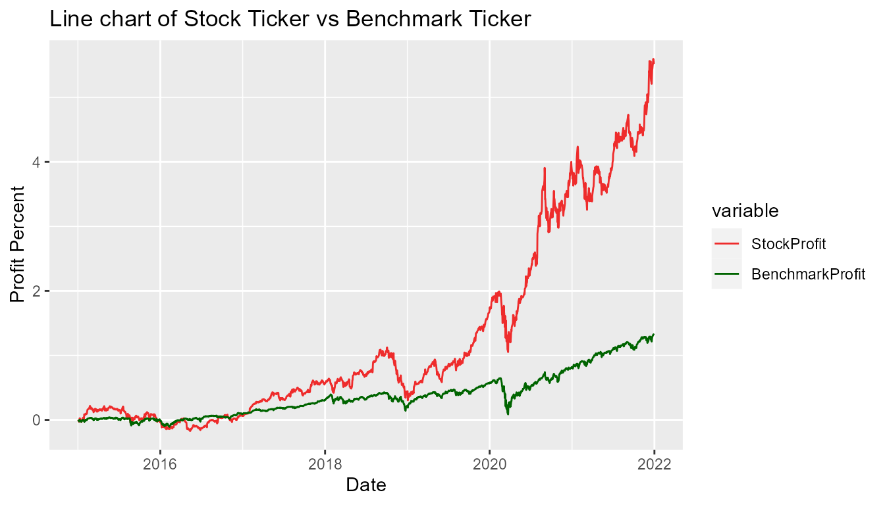
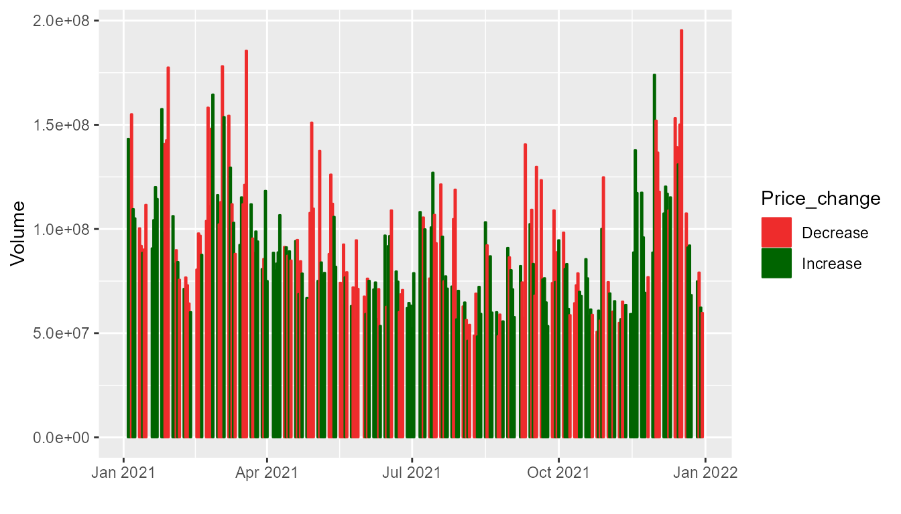

How To Use Rstockwatch Package
Affrin Sultana, Helin Wang, Pavel Levchenko, Shi Yan Wang
my-vignette.RmdRstockwatch package has been created to provide a very simple interface for checking movements in stock prices in comparison to the market. This is implemented by accessing public data from Yahoo Finance by selecting a ticker of the stock, range of start and end dates and benchmark for comparison, like SP500. As a result of data processing with rstockwatch package, users will be able to generate two plots: one with two lines showing percentage change in profit since the start date and volumes of trading and another related to daily change in the volume of stock trades as shown at examples below.
Functions description
This package is built with following four functions:
percent_changeCalculation of profit percentage change of a stock for a given period of time based on data extracted from Yahoo finance.profit_vizVisualization of profit percentage change trend of a stock against market benchmark for a given period of time. Note that during weekends and public holidays, stock market has no data available, this is handled in plotting as wellvolume_changeCalculation of daily trading volume change of a stock, whether it is increasing or decreasing. This data is used in next function for color mapping of bar plot.volume_vizVisualization of trading volume as bar plots colored by changes in volume in comparison with previous day. This plot is overlayed with line plots created with the second function. . Note that during weekends and public holidays, stock market has no data available, this is handled in plotting as well
Comparison with similar packages in R Ecosystem
There are many packages written for analysis of stock data. One of relevant R package in this category is stockAnalyzer, which allows a lot of manipulations with time series data, such as creating moving averages or calculating other parameters for technical analysis. Power of Rstockwatch is in its simplicity, so users are not overwhelmed with all extra features and just have a simple view with key comparisons for a stock of interest.
Installation
You can install the development version from GitHub with (remove comment sign # before installng):
# install.packages("devtools")
# devtools::install_github("UBC-MDS/Rstockwatch")Usage and Example
After the successful installation of this package user are recommend to restart the R session to update any dependencies packages. The functions in this package require input four parameters: stock_ticker, start_date, end_date and benchmark_ticker. Output results are in form of an plot based on “ggplot” package.
Import the functions from package with following commands:
library(Rstockwatch)1. To check the profit percent
percent_change('AAPL', '2015-01-01', '2021-12-31')
#> Registered S3 method overwritten by 'quantmod':
#> method from
#> as.zoo.data.frame zoo
#> # A tibble: 1,762 x 2
#> date percent_change
#> <date> <dbl>
#> 1 2015-01-02 0
#> 2 2015-01-05 -0.028
#> 3 2015-01-06 -0.028
#> 4 2015-01-07 -0.014
#> 5 2015-01-08 0.023
#> 6 2015-01-09 0.025
#> 7 2015-01-12 -0.001
#> 8 2015-01-13 0.008
#> 9 2015-01-14 0.004
#> 10 2015-01-15 -0.023
#> # ... with 1,752 more rows2. To visualize the profit percentage change trend of a stock against stock market benchmark
profit_viz('AAPL', '2015-01-01', '2021-12-31', 'SPY')
3. To check daily trading volume change of a stock
volume_change('AAPL', '2021-01-01', '2021-12-31')
#> # A tibble: 251 x 3
#> date volume Price_change
#> <date> <dbl> <chr>
#> 1 2021-01-04 143301900 Increase
#> 2 2021-01-05 97664900 Increase
#> 3 2021-01-06 155088000 Decrease
#> 4 2021-01-07 109578200 Increase
#> 5 2021-01-08 105158200 Increase
#> 6 2021-01-11 100384500 Decrease
#> 7 2021-01-12 91951100 Decrease
#> 8 2021-01-13 88636800 Increase
#> 9 2021-01-14 90221800 Decrease
#> 10 2021-01-15 111598500 Decrease
#> # ... with 241 more rows4. To visualize the volume change trend of a stock
volume_viz('AAPL', '2021-01-01', '2021-12-31')